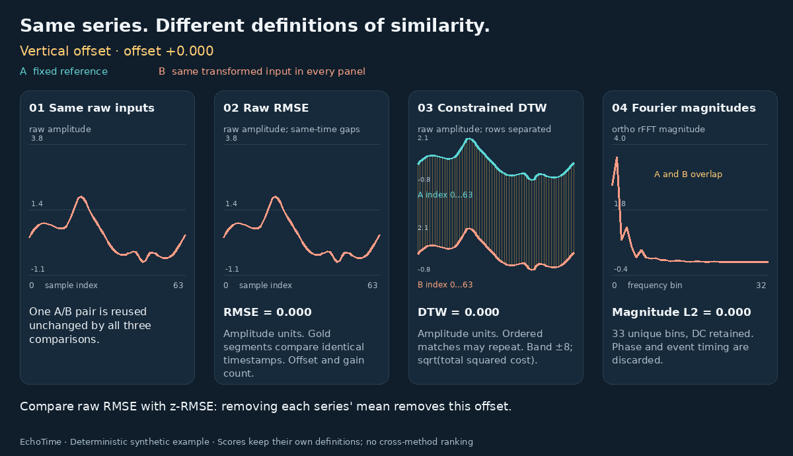

What Does Similar Mean for a Time Series? A Mechanism-Level Tour of Distances, Alignments and Representations
Two curves can share a rhythm while their peaks occur at different times. They can trace the same rise and fall at different amplitudes. They can contain one identical event and otherwise behave differently. Each resemblance supports a different answer to “How similar are these series?”
A useful way to read the literature is to ask three questions: What information enters the comparison? Which correspondences are allowed? What evidence is compressed into the final score? These questions connect methods that are often presented as an alphabetical catalogue of distances.
The interactive companion uses one 64-sample reference curve containing an oscillation, a broad peak, a narrow negative event and a small trend. It applies one controlled transformation at a time: baseline, gain, timing, event content, phase or ordering. These controlled comparisons reveal what each method treats as meaningful.
Explore the interactive companion.

A map of the mechanisms
The table summarizes the comparisons developed below. “Retained” means that the information can affect the comparison; it does not imply that the representation reconstructs the original signal.
| Method | Evidence retained | Freedom or information loss |
|---|---|---|
| Euclidean distance | Values at corresponding timestamps | Timing is fixed; normalization can remove level and gain |
| DTW | Values and monotone correspondence | Local stretching and repeated matches |
| DDTW | Local derivative estimates | Level is removed; slopes drive alignment |
| shapeDTW | Neighbourhood descriptors | Descriptor choice determines which local details survive |
| soft-DTW | Costs of admissible alignment paths | Smooth aggregation replaces selection of one minimum |
| SBD | Globally aligned, standardized waveform | One shared lag; no independent local stretching |
| LCSS | Ordered matches within tolerances | Unmatched observations can be skipped |
| ERP / MSM / TWED | Values connected by specified edit operations | Gaps, duplication and timing receive different costs |
| ADTW | DTW local costs plus warping count | Every horizontal or vertical step has an added price |
| DFT magnitude / ACF | Frequency strengths / lagged dependence | Detailed event localization is compressed |
| SAX / catch22 | Ordered coarse symbols / selected statistics | Within-bin detail / information outside the features is lost |
| Matrix Profile | Each window's nearest matching window | Whole-record similarity requires a further aggregation |
| TS2Vec / CoST | Learned contextual / seasonal and trend features | Training objectives and aggregation shape the comparison |
Start with the values and the clock
For equally sampled, equal-length series, Euclidean distance accumulates discrepancies at the same index. A delayed peak therefore incurs error at both its old and new positions. That response is appropriate when timestamps denote a shared experimental clock.
Preprocessing changes the question before any alignment occurs. For a nonconstant series, standardizing each curve separately gives
z(x)[t] = (x[t] - mean(x)) / sd(x)
If y = a*x + b with a > 0, their standardized curves coincide. This is an algebraic removal of baseline and positive gain. Negative gain reverses the standardized curve. A study of waveform shape may welcome this removal; a study of absolute excursion size must preserve that information elsewhere. The normalization choice should therefore appear beside the distance name.
DTW and three changes to its mechanism
DTW: change the correspondence
Sakoe and Chiba's dynamic-programming formulation finds a low-cost, temporally ordered alignment. With the common diagonal, horizontal and vertical steps, the accumulated cost satisfies
D[i,j] = c(x[i], y[j]) + min(D[i-1,j-1], D[i-1,j], D[i,j-1])
With squared Euclidean local costs, D is an accumulated squared cost; some implementations report its square root.
Horizontal and vertical steps permit one observation to correspond to several observations in the other series. A broad peak can consequently match a narrower peak. The path preserves order: it cannot freely exchange two events.
The local cost, endpoint conditions and admissible path region are substantive choices. A narrow band limits timing displacement; a wider band permits more deformation. If event duration is diagnostic, an inexpensive alignment can conceal useful differences. Inspecting the path reveals which durations the comparison treated as interchangeable.
DDTW: change the evidence being aligned
Keogh and Pazzani's DDTW aligns derivative estimates. On a unit-spaced grid, its original interior-point estimate averages the backward slope and a two-step central slope:
derivative[i] = ((x[i] - x[i-1]) + (x[i+1] - x[i-1])/2) / 2
A constant vertical offset disappears from these estimates. A rise aligns according to its direction and steepness, helping distinguish similar heights reached through different local behaviour. Gain still scales the derivatives. Differentiation also changes the influence of noise and short spikes. Thus the derivative estimator, sampling interval and any smoothing all help define the comparison.
shapeDTW: give each match a neighbourhood
Zhao and Itti's shapeDTW builds a descriptor around each timestamp and aligns the descriptor sequence. Two samples of equal height may have very different surroundings: one belongs to a rising edge, another to a plateau. Neighbourhood evidence helps distinguish those correspondences.
Window width controls the scale of that evidence. Descriptor choice controls its content: raw subsequences retain local values, whereas slope or derivative descriptors emphasize change and remove constant level offsets. A descriptor that averages heavily can weaken a brief event. Calling all shapeDTW variants amplitude-invariant would obscure these different constructions.
soft-DTW: change how paths contribute
Cuturi and Blondel's soft-DTW replaces the hard minimum over path costs Cπ with
softDTWγ(x,y) = -γ log Σπ exp(-Cπ/γ), γ > 0
Near-optimal paths contribute alongside the best path, and the objective approaches the hard minimum as the smoothing parameter tends to zero. With differentiable local costs, this supplies gradients for learning and averaging. It does not itself impose a stronger restriction on deformation.
The log-sum over several low-cost paths can put the objective below every individual path cost. Raw soft-DTW can therefore be negative and need not vanish on self-comparison. Blondel, Mensch and Vert study corrections based on self-comparisons and establish divergence properties under particular ground-cost assumptions. The smoothing parameter controls path aggregation; it is distinct from a warping penalty or window.
SBD: move the entire curve together
The shape-based distance in Paparrizos and Gravano's k-Shape paper uses
SBD(x,y) = 1 - max over lags ℓ of NCCℓ(z(x), z(y))
Every event receives the same lag. Relative spacing between the broad peak and short event survives alignment, making SBD useful for reasoning about an unknown starting time. If the early oscillation needs one lag and the later peak needs another, a single shift cannot satisfy both.
The original construction uses linear cross-correlation with full-series norm normalization and zero padding outside the observed overlap. It does not wrap the end back to the beginning. Consequently, cropping and boundary loss still matter. SBD is the comparison component; k-Shape additionally specifies a clustering and centroid procedure.
When observations may remain unmatched
These methods assign different meanings to an extra event. Their edit rules reveal whether the event is tolerated, preserved or charged according to its magnitude and timing.
LCSS counts acceptable ordered matches. Vlachos, Kollios and Gunopulos combine a value tolerance with an index-displacement tolerance. Observations outside those conditions can be skipped while later matches remain available. A short spike can therefore reduce matched coverage without contributing an arbitrarily large amplitude error. Thresholds create discrete decisions: moving just across a tolerance boundary can change the match count. Normalizing by the shorter length also allows a short sequence to match completely inside a longer one, provided the temporal tolerance admits those matches.
ERP prices gaps relative to a reference value. In Chen and Ng's ERP, matching compares values, while deletion or insertion compares a value with a chosen gap value g. Under absolute local costs, deleting x[i] costs abs(x[i] - g). A near-baseline sample and a large excursion consequently have different deletion costs. The gap reference expresses what an absent observation should resemble; changing it changes the preferred edits.
MSM edits through moves, splits and merges. In Stefan, Athitsos and Das's formulation, moves cost the absolute value change; duplicating a sample through a split or merging equal adjacent samples has a fixed cost. The dynamic program folds necessary moves into context-dependent insertion and deletion costs, so extending a plateau and inserting an excursion receive different treatment. Its translation invariance concerns shifting both inputs by the same constant. Shifting only one input still changes their relative values.
TWED makes timestamps part of the edit cost. Marteau's formulation combines value discrepancies, adjacent-sample transitions and explicit time differences. An edit penalty controls insertion and deletion, while a stiffness parameter weights temporal separation. Two identical value sequences sampled on different time grids can therefore differ. Timestamp units matter: replacing seconds with milliseconds changes the temporal contribution unless the stiffness is adjusted. This is a direct way to keep elapsed time relevant while permitting edits.
ADTW charges for every warping step. Herrmann and Webb's amerced DTW adds a fixed penalty to horizontal and vertical steps. Diagonal progress avoids that surcharge. At zero penalty the recurrence becomes ordinary DTW; for equal-length inputs, a sufficiently large penalty favours the diagonal path. A band limits where a path may go. Amercement prices how much non-diagonal movement it uses. Because the penalty competes with local costs, its meaningful scale depends on the amplitude preprocessing and cost definition.
Compare representations: what survives the transformation?
Fourier coefficients and magnitude spectra
Agrawal, Faloutsos and Swami use Fourier coefficients for similarity indexing. The complete complex DFT retains phase and, with the appropriate normalization, preserves Euclidean distance through Parseval's identity. Keeping fewer coefficients emphasizes selected frequencies and loses the omitted components.
Taking only magnitudes makes a further change. For a circular shift, each coefficient receives a unit-magnitude phase factor, so its magnitude remains unchanged. More generally, different phase arrangements can share the same magnitude spectrum while producing different event layouts. Magnitude comparison therefore retains how strongly frequencies occur and discards how their phases combine to locate events. Normalizing spectral energy also removes overall gain. Finite-window shifts that crop or introduce samples need separate treatment because they change the observed signal.
ACF: retain dependence at selected lags
An autocorrelation representation summarizes how values co-vary with their own delayed values. The NIST definition centers the series and normalizes lagged products by total centered energy. Comparing selected lags emphasizes persistence, alternation and recurring timescales.
Event locations are aggregated, but temporal order still matters through the lagged pairs. Arbitrarily shuffling samples usually changes the ACF. Distinct signals can nevertheless have the same second-order dependence, so matching autocorrelation does not identify a unique waveform or generating process. For finite records, estimator normalization and endpoint treatment affect the result.
SAX: retain coarse order, quantize amplitude
Lin and colleagues' SAX standardizes the series, averages successive segments through piecewise aggregate approximation, and maps those averages into symbols using Gaussian breakpoints. The resulting word preserves segment order while suppressing within-segment detail and within-bin amplitude differences.
A narrow event can be diluted by segment averaging. A small amplitude change near a breakpoint can change a symbol. The paper's MINDIST uses distances between symbol intervals to lower-bound the corresponding Euclidean distance. A later conversion into a bag of words discards additional ordering information; that loss comes from the bag representation, rather than from the SAX word itself.
catch22: retain a vocabulary of dynamical properties
Lubba and colleagues' catch22 selects 22 complementary statistics covering such properties as autocorrelation, distributions, fluctuations and outliers. Two curves can be close in this feature space because they share these properties despite differing event-by-event.
The authors' implementation computes these features on standardized values; raw mean and standard deviation are additional catch24 features. Feature coordinates also have different scales. A Euclidean comparison between catch22 vectors therefore needs a declared feature-scaling policy, fitted on the reference data when appropriate. The resulting geometry depends on both the extracted statistics and that policy.
Matrix Profile: ask which windows have neighbours
Yeh and colleagues' Matrix Profile changes the comparison object. For a selected window length m, a profile from series A to series B records
P(A→B)[i] = min over j of d_z(window(A,i,m), window(B,j,m))
Here window(A,i,m) contains m samples starting at i, and the standard construction uses window-wise z-normalized Euclidean distance. Each window retains an internal clock, while its match may occur anywhere in the other record. Self-joins exclude trivial neighbouring matches.
A small profile entry identifies a close local match. It says little about the rest of either record. Summarizing the minimum asks whether any motif is shared; summarizing coverage or profile quantiles asks how broadly the records resemble one another. The reverse join can give a different picture. Window length determines whether the target is a brief event, a complete cycle or a longer operating regime.
Learned representations: let the objective shape the geometry
TS2Vec learns contextual representations at multiple scales. Yue and colleagues contrast representations from overlapping, augmented contexts. The objective combines temporal discrimination and discrimination between instances, applied hierarchically. Timestamp representations can be aggregated by max pooling to represent a subsequence or whole series.
This makes the aggregation choice scientifically consequential. Max pooling retains strong feature activations while compressing their timing and multiplicity. The encoder has already used temporal context, so the pooled representation is not generally invariant to rearranging the raw observations. A useful retrieval study should examine which events activate its coordinates and which transformations change neighbour rankings.
CoST builds separate seasonal and trend representations. Woo and colleagues use causal convolutional experts for trend features and a learnable Fourier layer for seasonal features. Their contrastive objective includes time-domain learning and frequency-domain terms for both amplitude and phase. The learned features support a downstream forecasting regressor.
The phase term is a particularly useful distinction from magnitude-spectrum comparison: seasonal timing can remain informative. Using CoST features for similarity additionally requires choosing which timestamps to compare, how to combine seasonal and trend coordinates, and how to scale them. Those decisions should reflect whether the desired neighbour shares a waveform, a recurring regime or a forecasting-relevant state.
Seven transformations to inspect on the same curves
The following are analytical consequences and testable expectations from the mechanisms above. They suggest controlled comparisons without assuming a universal ranking.
| Transformation | What it probes | Consequence to inspect |
|---|---|---|
| Constant offset | Is absolute level meaningful? | Separate z-normalization and derivatives remove it; raw value costs retain it. |
| Positive gain | Is excursion size meaningful? | Standardization removes gain; raw slopes and unnormalized spectral magnitudes still change. |
| Global shift | Is the start time arbitrary? | SBD chooses one lag; circular DFT magnitudes coincide; cropped observations require boundary checks. |
| Local time warp | May relative durations change? | Elastic paths accommodate it; a shared lag cannot generally align every event. |
| Added local event | Should an unmatched event dominate? | LCSS may skip it, edit costs price it, and window matching reveals which regions still have neighbours. |
| Changed Fourier phase | Does event placement matter beyond frequency content? | Magnitude spectra remain identical by construction; waveform comparisons can change substantially. |
| Reordered events | Does sequence order define identity? | Monotone alignments preserve ordering constraints; feature summaries may merge distinctions. SAX words retain coarse order. |
An informative comparison includes both a transformation that should be tolerated and a nearby change that should remain detectable. For example, delay an entire two-event pattern, then move only its second event. Their difference tests whether the desired invariance concerns the start time or the spacing between events.
A controlled numerical example
The companion's reproducible generator gives the following results at full perturbation strength. Read each column according to its own definition and units.
| Change to the same reference curve | Raw RMSE | z-RMSE | DFT magnitude L2 | Adjusted ACF L2 |
|---|---|---|---|---|
| Add a constant 1.5 | 1.5000 | 0 | 12.0000 | 0 |
| Change Fourier phases | 1.2423 | 1.8055 | 0 | 0.5108 |
| Reverse the sample order | 1.3198 | 1.9181 | 0 | 0 |
The DFT column compares 33 unweighted orthonormal real-FFT magnitudes, including DC. The ACF column compares lags 1–12 using centered products divided by (64-k) times the population variance. The z-RMSE column standardizes each curve separately. A displayed zero here rounds to zero at ten decimal places.
The constant offset changes only the DC coefficient in the spectrum, explaining its magnitude distance of 12. Phase perturbation preserves Fourier magnitudes while changing this finite-window ACF. Its boundary rule counts only actual overlapping pairs; the 64-point DFT has a circular boundary convention. Exact reversal preserves both: reversing a real sequence preserves spectral magnitudes, and each lagged product has a reversed counterpart. Event order has nevertheless reversed. This is a concrete information loss to consider when choosing a representation.
Three questions for discussion
-
How much temporal freedom is justified by the measurement process? If repeated measurements exhibit a distribution of timing jitter, can that evidence determine a warping band, TWED stiffness or ADTW penalty? Which diagnostic event relationships disappear as the allowance increases?
-
What amount of shared local structure should establish similarity between complete records? Would one common motif suffice, or should most windows find counterparts in both directions? How should a rare, consequential event influence a profile-based aggregation alongside abundant routine behaviour?
-
Which invariances survive representation learning and pooling? Under a fixed checkpoint and retrieval protocol, do positive gain, local time warp and phase rearrangement preserve the neighbours that domain experts expect? Can separate seasonal, trend and event-level evaluations explain the failures of a single pooled score?
Answering these questions turns similarity selection into an explicit account of which differences matter. The most informative output is often a score together with the correspondence, matched regions or retained features that made the score possible.
Built from the versioned Markdown source. Share questions, corrections and reproducible examples in GitHub Discussions.